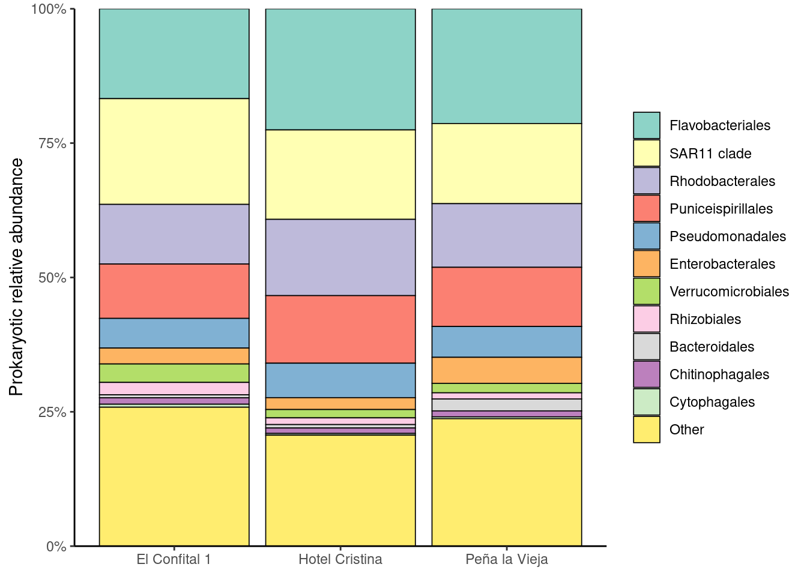
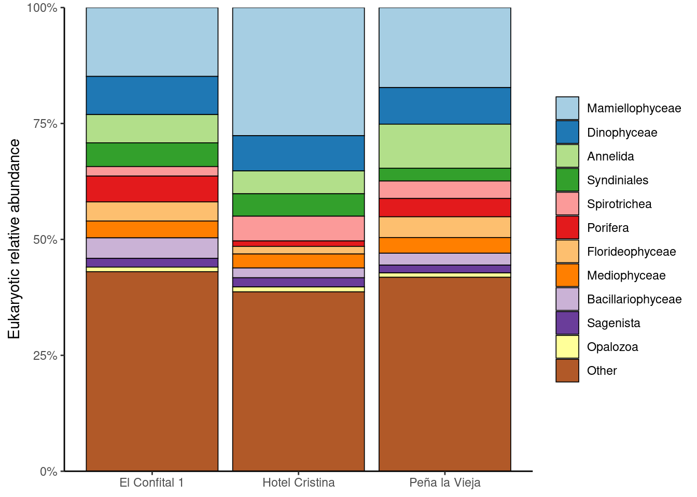
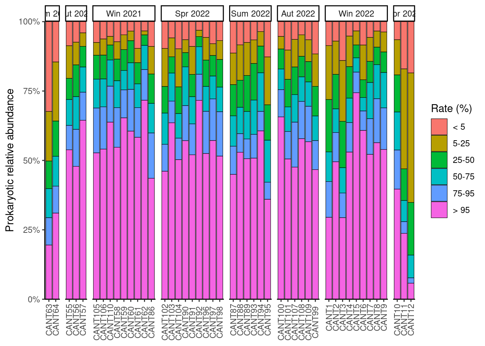
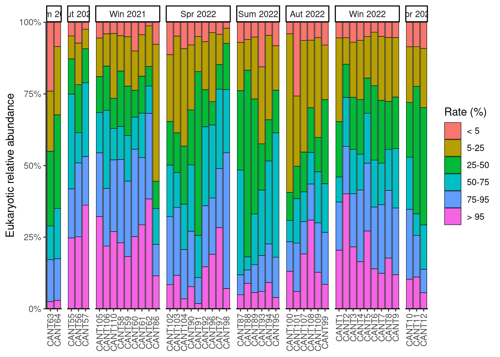
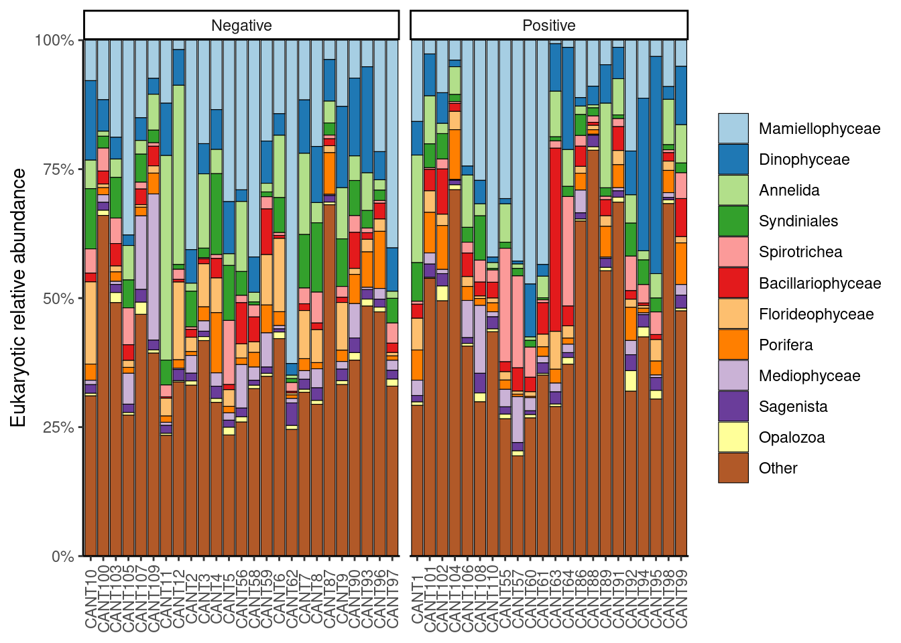

Taxonomical composition
1 How did the taxonomical composition evolve over time?

2 Were there local differences in taxonomical composition?


3 How does rarity based abundance change over time?
We pick up again the concept of rarity previously exposed in Amplicon Sequence Variants.


4 How does taxonomic composition change based on rarity?


4.1 How did rarity based taxonomical composition change over time?


5 Did we find bacteria of human origin (BHO)?
Yes! Documented Bacteria isolated from the human gastrointestinal track or other bodily fluids are considered of human origin. The most well-known of which is Escherichia coli, although there are many more species of bacteria living inside our bodies.
| Species | Reference |
|---|---|
| Alistipes indistinctus | Nagai et al. (2010) |
| Alistipes onderdonkii | Sakamoto et al. (2020) |
| Alistipes timonensis | Lagier et al. (2012) |
| Bacteroides dorei | Bakir et al. (2006) |
| Bacteroides vulgatus | Eggerth and Gagnon (1933) |
| Bacteroides thetaiotaomicron | Cato and Johnson (1976) |
| Bacteroides stercoris | Johnson, Moore, and Moore (1986) |
| Bacteroides plebeius | Kitahara et al. (2005) |
| Bacteroides coprocola | Kitahara et al. (2005) |
| Bacteroides eggerthii | Holdeman and Moore (1974) |
| Butyricicoccus faecihominis | Takada et al. (2016) |
| Coprobacter fastidiosus | Shkoporov et al. (2013) |
| Escherichia-Shigella coli | Devanga Ragupathi et al. (2018) |
| Intestinimonas timonensis | Durand et al. (2017) |
| Intestinimonas butyriciproducens | Kläring et al. (2013) |
| Parabacteroides merdae | Sakamoto and Benno (2006) |
| Porphyromonas asaccharolytica | Shan and Collins (1988) |
| Prevotella bivia | Shan and Collins (1990) |
| Prevotella disiens | Shan and Collins (1990) |
| Prevotella buccalis | Shan and Collins (1990) |
| Prevotella amnii | Lawson, Moore, and Falsen (2008) |
5.1 Where were BHO detected? When?

5.2 Are there compositional differences between samples based on the presence of BHO?


References
Bakir, Mohammad Abdul, Mitsuo Sakamoto, Maki Kitahara, Mitsuharu Matsumoto, and Yoshimi Benno. 2006. “Bacteroides Dorei Sp. Nov., Isolated from Human Faeces.” Journal Article. International Journal of Systematic and Evolutionary Microbiology 56 (7): 1639–43. https://doi.org/10.1099/ijs.0.64257-0.
Cato, Elizabeth P., and John L. Johnson. 1976. “Reinstatement of Species Rank for Bacteroides Fragilis, b. Ovatus, b. Distasonis, b. Thetaiotaomicron, and b. Vulgatus: Designation of Neotype Strains for Bacteroides Fragilis (Veillon and Zuber) Castellani and Chalmers and Bacteroides Thetaiotaomicron (Distaso) Castellani and Chalmers.” Journal Article. International Journal of Systematic and Evolutionary Microbiology 26 (2): 230–37. https://doi.org/10.1099/00207713-26-2-230.
Devanga Ragupathi, N. K., D. P. Muthuirulandi Sethuvel, F. Y. Inbanathan, and B. Veeraraghavan. 2018. “Accurate Differentiation of Escherichia Coli and Shigella Serogroups: Challenges and Strategies.” New Microbes and New Infections 21: 58–62. https://doi.org/10.1016/j.nmni.2017.09.003.
Durand, G. A., F. Cadoret, J. C. Lagier, P. E. Fournier, and D. Raoult. 2017. “Description of ‘Gorbachella Massiliensis’ Gen. Nov., Sp. Nov., ‘Fenollaria Timonensis’ Sp. Nov., ‘Intestinimonas Timonensis’ Sp. Nov. And ‘Collinsella Ihuae’ Sp. Nov. Isolated from Healthy Fresh Stools with Culturomics.” New Microbes and New Infections 16: 60–62. https://doi.org/10.1016/j.nmni.2017.01.005.
Eggerth, Arnold H., and Bernard H. Gagnon. 1933. “The Bacteroides of Human Feces.” Journal of Bacteriology 25 (4): 389–413. https://doi.org/10.1128/jb.25.4.389-413.1933.
Holdeman, Lillian V., and W. E. C. Moore. 1974. “New Genus, Coprococcus, Twelve New Species, and Emended Descriptions of Four Previously Described Species of Bacteria from Human Feces.” Journal Article. International Journal of Systematic and Evolutionary Microbiology 24 (2): 260–77. https://doi.org/10.1099/00207713-24-2-260.
Johnson, John L., W. E. C. Moore, and Lillian V. H. Moore. 1986. “Bacteroides Caccae Sp. Nov., Bacteroides Merdae Sp. Nov., and Bacteroides Stercoris Sp. Nov. Isolated from Human Feces.” Journal Article. International Journal of Systematic and Evolutionary Microbiology 36 (4): 499–501. https://doi.org/10.1099/00207713-36-4-499.
Kitahara, Maki, Mitsuo Sakamoto, Masako Ike, Shinji Sakata, and Yoshimi Benno. 2005. “Bacteroides Plebeius Sp. Nov. And Bacteroides Coprocola Sp. Nov., Isolated from Human Faeces.” Journal Article. International Journal of Systematic and Evolutionary Microbiology 55 (5): 2143–47. https://doi.org/10.1099/ijs.0.63788-0.
Kläring, Karoline, Laura Hanske, Nam Bui, Cédric Charrier, Michael Blaut, Dirk Haller, Caroline M. Plugge, and Thomas Clavel. 2013. “Intestinimonas Butyriciproducens Gen. Nov., Sp. Nov., a Butyrate-Producing Bacterium from the Mouse Intestine.” Journal Article. International Journal of Systematic and Evolutionary Microbiology 63 (Pt_12): 4606–12. https://doi.org/10.1099/ijs.0.051441-0.
Lagier, Jean-Christophe, Fabrice Armougom, Ajay Kumar Mishra, Thi-Tien Nguyen, Didier Raoult, and Pierre-Edouard Fournier. 2012. “Non-Contiguous Finished Genome Sequence and Description of Alistipes Timonensis Sp. Nov.” Standards in Genomic Sciences 6 (3): 315–24. https://doi.org/10.4056/sigs.2685971.
Lawson, Paul A., Edward Moore, and Enevold Falsen. 2008. “Prevotella Amnii Sp. Nov., Isolated from Human Amniotic Fluid.” Journal Article. International Journal of Systematic and Evolutionary Microbiology 58 (1): 89–92. https://doi.org/10.1099/ijs.0.65118-0.
Nagai, Fumiko, Masami Morotomi, Yohei Watanabe, Hiroshi Sakon, and Ryuichiro Tanaka. 2010. “Alistipes Indistinctus Sp. Nov. And Odoribacter Laneus Sp. Nov., Common Members of the Human Intestinal Microbiota Isolated from Faeces.” Journal Article. International Journal of Systematic and Evolutionary Microbiology 60 (6): 1296–1302. https://doi.org/10.1099/ijs.0.014571-0.
Sakamoto, Mitsuo, and Yoshimi Benno. 2006. “Reclassification of Bacteroides Distasonis, Bacteroides Goldsteinii and Bacteroides Merdae as Parabacteroides Distasonis Gen. Nov., Comb. Nov., Parabacteroides Goldsteinii Comb. Nov. And Parabacteroides Merdae Comb. Nov.” Journal Article. International Journal of Systematic and Evolutionary Microbiology 56 (7): 1599–1605. https://doi.org/doi.org/10.1099/ijs.0.64192-0.
Sakamoto, Mitsuo, Nao Ikeyama, Yusuke Ogata, Wataru Suda, Takao Iino, Masahira Hattori, and Moriya Ohkuma. 2020. “Alistipes Communis Sp. Nov., Alistipes Dispar Sp. Nov. And Alistipes Onderdonkii Subsp. Vulgaris Subsp. Nov., Isolated from Human Faeces, and Creation of Alistipes Onderdonkii Subsp. Onderdonkii Subsp. Nov.” Journal Article. International Journal of Systematic and Evolutionary Microbiology 70 (1): 473–80. https://doi.org/10.1099/ijsem.0.003778.
Shan, H. N., and David M. Collins. 1988. “Proposal for Reclassification of Bacteroides Asaccharolyticus, Bacteroides Gingivalis, and Bacteroides Endodontalis in a New Genus, Porphyromonas.” Journal Article. International Journal of Systematic and Evolutionary Microbiology 38 (1): 128–31. https://doi.org/10.1099/00207713-38-1-128.
———. 1990. “NOTES: Prevotella, a New Genus to Include Bacteroides Melaninogenicus and Related Species Formerly Classified in the Genus Bacteroides.” Journal Article. International Journal of Systematic and Evolutionary Microbiology 40 (2): 205–8. https://doi.org/10.1099/00207713-40-2-205.
Shkoporov, Andrei N., Ekaterina V. Khokhlova, Andrei V. Chaplin, Lyudmila I. Kafarskaia, Alexei A. Nikolin, Vladimir Yu. Polyakov, Victoria A. Shcherbakova, Zoya A. Chernaia, and Boris A. Efimov. 2013. “Coprobacter Fastidiosus Gen. Nov., Sp. Nov., a Novel Member of the Family Porphyromonadaceae Isolated from Infant Faeces.” Journal Article. International Journal of Systematic and Evolutionary Microbiology 63 (Pt_11): 4181–88. https://doi.org/10.1099/ijs.0.052126-0.
Takada, Toshihiko, Koichi Watanabe, Hiroshi Makino, and Akira Kushiro. 2016. “Reclassification of Eubacterium Desmolans as Butyricicoccus Desmolans Comb. Nov., and Description of Butyricicoccus Faecihominis Sp. Nov., a Butyrate-Producing Bacterium from Human Faeces.” Journal Article. International Journal of Systematic and Evolutionary Microbiology 66 (10): 4125–31. https://doi.org/10.1099/ijsem.0.001323.